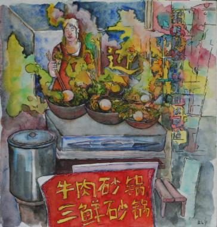

Während der "Chinatime", mit der die Hansestadt Hamburg ihre langjährige Partnerschaft mit China feiert, finden drei Ausstellungen einer Künstlergruppe der Gesellschaft für Deutsch-Chinesischen-Kulturaustausch statt - eine davon im Kulturhaus Süderelbe. Die Gruppe zeigt nach gemeinsamen Ausstellungen in Nanjing und Wuhu ihre Reiseeindrücke aus China.
Erfahrungen und Einflüsse werden dabei auf unterschiedliche Art und Weise reflektiert.
Ausgestellt werden Zeichnungen, Grafiken, Fotografien Aquarelle sowie Mischtechniken im westlichen wie im traditionellen chinesischen Stil.
Werke der Künstlergruppe sind ebenfalls zu sehen